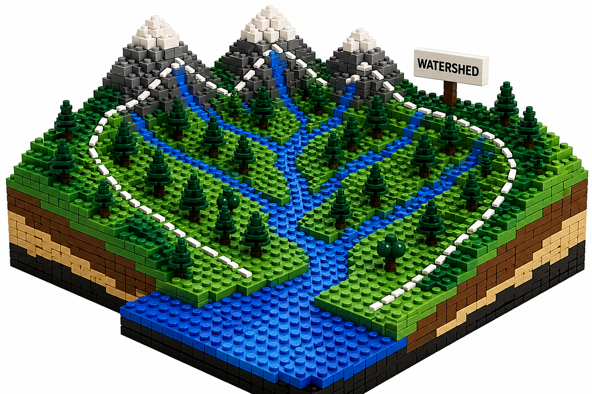
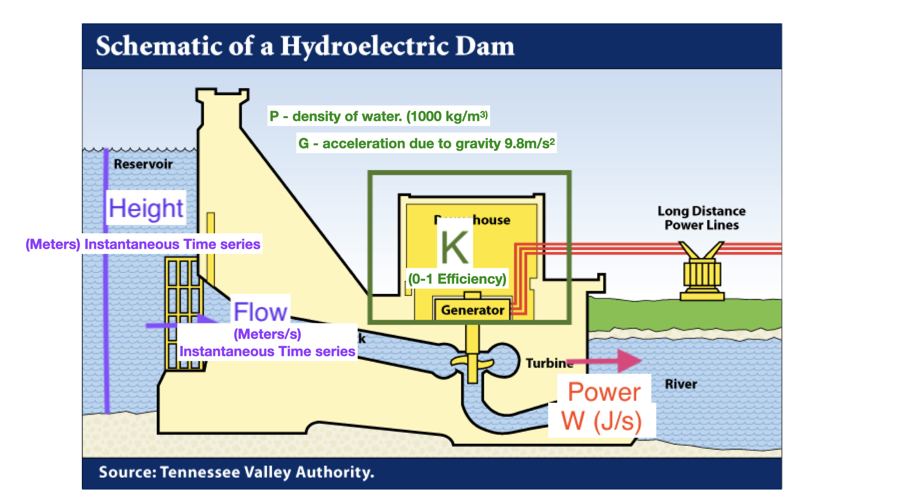

Time demand
1 1 8.3
2 2 10.3
3 3 19.0
4 4 16.0
5 5 15.6
6 7 19.8[1] 19.8 19.0 16.0 15.6 10.3 8.3All programming languages have ways to build modules that you can re-use
Lego Blocks

Breaking tasks into functions is a central programming concept
Often modules are called ‘functions’ but also called:
You have already been using functions in R - e.g. mean(), lm(), plot() etc.
When you start a programming/data science project - you should begin by:
Breaking your goal down into individual pieces
Identifying instructions that can be reused
EXAMPLES of Reuse
an ecosystem model might re-use instructions for calculating how a living organism grows
e.g you might have a function that calculates growth from temperature and moisture and you can re-use this function for different organisms or different species with slightly different inputs
an accounting program might re-use instructions for computing net present value from interest rates, that you can re-use for different projects or different time periods
Modules often become ‘black boxes’ which hides detail that might make understanding the program overly complex
Most languages have lots of black boxes already written AND most allow you to write your own
All functions/modules have inputs/parameters and outputs
Inputs — what you give the function - sometimes separated into input data and parameters
-sort
inputs - data stream
parameters - how to do the sort
Time demand
1 1 8.3
2 2 10.3
3 3 19.0
4 4 16.0
5 5 15.6
6 7 19.8[1] 19.8 19.0 16.0 15.6 10.3 8.3In this example, parameters are decreasing and method - they determine how the function works
**inputs* are the data to be sorted
Note sometimes parameters can influence how the functions works (e.g method)
Output is a sorted version of demand saved to result.
CONTRACT
Lets say we want to develop a function that computes power generated from hydro-reservoir
We know that power generation depends on water release rates and the potential energy (from the reservoir height)
Power generation from a reservoir

hydro
Contract
Input: Reservoir height (m) and flow rate (m3/sec) (these inputs could be a single value in time or a time series)
Output: Instantaneous power generation (W/s) (as a single value or value for each reservoir height and flow rate combination)
Parameters: \(K_{Eff}\) reservoir efficiency, ρ (density of water), \(g\) (acceleration due to gravity)
compute power using the following equation - body of the function
\(P = ρ * h * r * g * K_{Eff}\)
Format for a basic function in R
Some lines at the top that start with #’
these are documentation that describes inputs, outputs and what the function does
we will talk more about that - for now just follow the example, below
This is followed by the function definition
Function Name = function(inputs, parameters) {
body of the function (manipulation of inputs)
return(values to return)
}
You can name the function what every you want
In R, inputs and parameters are treated the same; but it is useful to think about them separately in designing the model - collectively they are sometimes referred to as arguments
ALWAYS USE Meaningful names for your function, its parameters and variables calculated within the function
In R we combine inputs/parameters in the first line of the function definition
we can provide “default” values that can be overwritten by the function user
Body includes all calculations between { and }
return* tells R what the output is
You could just write you function in-line
But best practice to keep as a file
Before you start download the file power_gen_orig.R from the course github site and save it in a directory on your computer - you will need to change path to read it in
library(here)
# source the function from a file - make sure you are in the right working directory
source(here("course-materials/R/power_gen_orig.R"))
# alternatively
# function definition in-line
power_gen_orig = function(height, flow, rho=1000, g=9.8, Keff=0.8) {
result = rho * height * flow * g * Keff
return(result)
}
# note that height and flow don't have default values, so you must provide them when you use the function, but the other parameters have default values that you can overwrite if you want toTo use the function we substitute “actual” values for each argument (parameter and inputs) (unless there are defaults)
R assumes that arguments are in the order that they were specified in the function definition - unless you refer to them by name
[1] 156800[1] 156800[1] 156800[1] 39200The scope of a variable in a program defines where it can be “seen” Variables defined inside a function cannot be “seen” outside of that function
There are advantages to this - the interior of the building block does not ‘interfere’ with other parts of the program
function (height, flow, rho = 1000, g = 9.8, Keff = 0.8)
{
result = rho * height * flow * g * Keff
return(result)
}
<bytecode: 0x7fc50380a038>Error:
! object 'height' not foundError:
! object 'Keff' not foundError:
! object 'results' not found[1] 219520[1] 54880Always write your function in a text editor and then copy into R
By convention we name files with functions in them by the name of the function.R e.g. power_gen_orig.R
you can have R read a text file by source(“power_gen.R”) - make sure you are in the right working directory
keep organized by keeping all functions in a subdirectory called R
Include comments both in the body of the function and at the top - there is a particular style of adding comments to the top of the function that we will use later to generate automatic documentation - so useful to start to follow it, more or less, now - see power_gen_orig.R for the style
Eventually we will want our function to be part of a package (a library of many functions) - to create a package you must use this convention (name.R) place all function in a directory called “R”
Example - source and use function
Complete Assignment 4! before Thursday’s Lecture